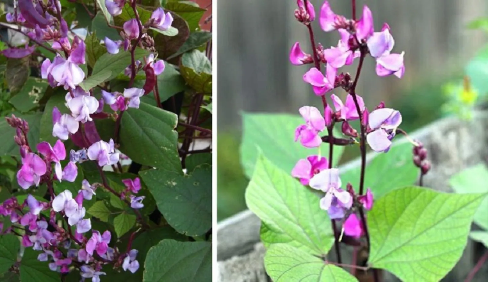

Latthe Education Society's Acharya Deshabhushan Ayurvedic Medical College And Hospital Bedkihal-Shamanewadi, 591214
Department of Dravyaguna Vigyana

Basonym of Drug
Kulattha
Main Synonym
Kullathika
Kulattha
Regional Name
Gujarati: Kalthi
Hindi: Kulthi, Kurthi
Kannada: Huruli
Tamil: Kolalu
Telugu: Ulavallu
English: Horse Gram
Botanical Name
Dolichos biflorus
Family
Fabaceae
External Morphology
2-3 feet high small herb
Useful Parts
Seed
Important Phytoconstituent
Nicotinic Acid
Protein
Vitamin A
Urease
Carbohydrate
Rasa Panchak
Rasa: Kashaya
Guna: Laghu, Ruksha
Virya: Ushna
Vipaka: Katu
Action
Vatakaphahara
Pittakara
Therapeutic Indication
Medohara (Anti-obesity)
Sukrahara (Decreases semen formation)
Ashmarihara (Lithotriptic)
Kasahara (Anti-cough)
Therapeutic Uses
Asmari:
Soaked seed of Kulattha is taken empty stomach in the morning for kidney stone removal.
Kasa:
Decoction of Kulattha is beneficial in cough and cold.
Dose
Seed Powder - 3-5 gm
Decoction - 50-100 ml
Formulations
Kulatthadya Ghrita
Adverse Effect
Not Known
Remedial Measure
Not required
Purification
Not required